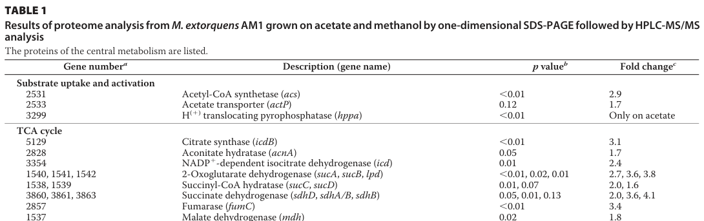

acnA encodes aconitate hydratase (EC 4.2.1.3), also known as aconitase, which catalyzes the reversible isomerization of citrate to D-threo-isocitrate via the intermediate cis-aconitate in the tricarboxylic acid (TCA) cycle. This is step 2/2 in the conversion of oxaloacetate to isocitrate, linking citrate synthase (gltA) to isocitrate dehydrogenase (icd). The enzyme contains a [4Fe-4S] iron-sulfur cluster that is essential for catalytic activity and functions as a monomer. In methylotrophs, AcnA plays a crucial role in the TCA cycle when carbon flows from C1 compounds through the serine cycle and glycolysis into acetyl-CoA: citrate (produced by gltA) is isomerized to isocitrate (substrate for icd). Organism-specific proteomics maps acnA to gene 2828 (MexAM1_META1p2828); the protein is detected as a TCA-cycle enzyme during acetate growth (where AM1 uses the ethylmalonyl-CoA pathway in place of the glyoxylate cycle) and aconitase activity is a notably responsive control point during the shift from multi-carbon to single-carbon (methylotrophic) growth. The enzyme also participates in propionate degradation via the 2-methylcitrate cycle, catalyzing the hydration of 2-methyl-cis-aconitate to (2R,3S)-2-methylisocitrate (EC 4.2.1.99). Interestingly, the apo form of AcnA (lacking the iron-sulfur cluster) can function as an RNA-binding regulatory protein, providing a post-transcriptional iron-sensing mechanism similar to eukaryotic aconitases/IRPs (demonstrated for other bacterial aconitases; not yet directly shown for AM1 AcnA). AcnA belongs to the aconitase/IPM isomerase family and is essential for both energy production through the TCA cycle and catabolism of short-chain fatty acids.
| GO Term | Evidence | Action | Reason |
|---|---|---|---|
|
GO:0003723
RNA binding
|
IEA
GO_REF:0000043 |
KEEP AS NON CORE |
Summary: The apo form of AcnA (lacking the [4Fe-4S] cluster) functions as an RNA-binding regulatory protein, providing a post-transcriptional iron-sensing mechanism. This is a secondary, regulatory function distinct from the primary catalytic role. [file:METEA/acnA/acnA-uniprot.txt, "The apo form of AcnA functions as a RNA-binding regulatory protein"]
Reason: The keyword-derived RNA-binding ("moonlighting"/IRP-like) activity is a plausible secondary regulatory function of the apo-enzyme, well established for other bacterial aconitases, but has not been directly demonstrated for AM1 AcnA. It is retained as a non-core function distinct from the primary catalytic role.
Supporting Evidence:
file:METEA/acnA/acnA-deep-research-falcon.md
apo-aconitase (clusterless/inactive form) can function as an RNA-binding protein (RBP), regulating transcripts involved in iron metabolism and central metabolism
|
|
GO:0003994
aconitate hydratase activity
|
IEA
GO_REF:0000120 |
ACCEPT |
Summary: This is the primary and specific catalytic activity of AcnA - the reversible isomerization of citrate to D-threo-isocitrate via cis-aconitate. This is step 2/2 in the TCA cycle conversion of oxaloacetate to isocitrate. [file:METEA/acnA/acnA-uniprot.txt, "Aconitate hydratase"; "citrate = D-threo-isocitrate"]
Reason: This is the well-supported core molecular function. AM1-specific proteomics assigns this enzyme as the canonical aconitate hydratase of central metabolism, consistent with the UniProt EC 4.2.1.3 assignment.
Supporting Evidence:
file:METEA/acnA/acnA-deep-research-falcon.md
M. extorquens* AM1 acnA is assigned as the canonical aconitate hydratase in central metabolism
file:METEA/acnA/acnA-deep-research-falcon.md
a tricarboxylic acid (TCA) cycle enzyme that catalyzes the...isomerization of citrate to isocitrate
|
|
GO:0006099
tricarboxylic acid cycle
|
IEA
GO_REF:0000120 |
ACCEPT |
Summary: AcnA is a key enzyme in the TCA cycle, catalyzing step 2/2 in the conversion of oxaloacetate to isocitrate. This links citrate synthase (gltA) to isocitrate dehydrogenase (icd). [file:METEA/acnA/acnA-uniprot.txt, "Carbohydrate metabolism; tricarboxylic acid cycle; isocitrate from oxaloacetate: step 2/2"]
Reason: Strong organism-specific support. AM1 proteomics detected aconitate hydratase as a TCA-cycle protein during acetate growth, and aconitase activity is a responsive control point during the multi-carbon to single-carbon growth transition.
Supporting Evidence:
file:METEA/acnA/acnA-deep-research-falcon.md
comparative proteomics detected TCA-cycle proteins including...aconitate hydratase (AcnA)
file:METEA/acnA/acnA-deep-research-falcon.md
Aconitase activity was the...only measured enzyme that showed a statistically significant decrease, dropping by...48% during the transition
|
|
GO:0016829
lyase activity
|
IEA
GO_REF:0000043 |
KEEP AS NON CORE |
Summary: This accurately describes the enzymatic mechanism - AcnA is a hydro-lyase that catalyzes the reversible dehydration of citrate (removing H2O to form cis-aconitate) and hydration of cis-aconitate (adding H2O to form isocitrate). [file:METEA/acnA/acnA-uniprot.txt, "Lyase"]
Reason: Correct but generic. The specific child term GO:0003994 (aconitate hydratase activity) already captures the precise hydro-lyase chemistry and is retained as core; this parent is kept as non-core.
Supporting Evidence:
file:METEA/acnA/acnA-deep-research-falcon.md
isomerization of citrate to isocitrate, proceeding through the aconitate/cis‑aconitate intermediate
|
|
GO:0046872
metal ion binding
|
IEA
GO_REF:0000043 |
KEEP AS NON CORE |
Summary: This is a general parent term that is correct but not informative. The more specific term GO:0051539 (4 iron, 4 sulfur cluster binding) properly identifies the specific metal cofactor.
Reason: Correct but uninformative parent term; the specific child GO:0051539 (4 iron, 4 sulfur cluster binding) identifies the actual cofactor and is retained as core.
|
|
GO:0047456
2-methylisocitrate dehydratase activity
|
IEA
GO_REF:0000120 |
KEEP AS NON CORE |
Summary: AcnA also participates in propionate degradation via the 2-methylcitrate cycle, catalyzing the hydration of 2-methyl-cis-aconitate to (2R,3S)-2-methylisocitrate. This is a secondary activity beyond the primary TCA cycle function. [file:METEA/acnA/acnA-uniprot.txt, "Could catalyze the hydration of 2-methyl-cis-aconitate to yield (2R,3S)-2-methylisocitrate"; "(2S,3R)-3-hydroxybutane-1,2,3-tricarboxylate = 2-methyl-cis-aconitate + H2O"]
Reason: This 2-methylcitrate-cycle activity is a plausible secondary function (UniProt hedges with "could catalyze") supporting propionate degradation, distinct from the primary TCA-cycle aconitase role. Retained as non-core.
|
|
GO:0051536
iron-sulfur cluster binding
|
IEA
GO_REF:0000043 |
KEEP AS NON CORE |
Summary: This is a general parent term that is correct but not informative. The more specific term GO:0051539 (4 iron, 4 sulfur cluster binding) properly identifies the specific cluster type.
Reason: Correct but uninformative parent term; the specific child GO:0051539 (4 iron, 4 sulfur cluster binding) identifies the actual cluster and is retained as core.
|
|
GO:0051539
4 iron, 4 sulfur cluster binding
|
IEA
GO_REF:0000043 |
ACCEPT |
Summary: AcnA contains a [4Fe-4S] iron-sulfur cluster that is essential for its catalytic activity. This cluster is required for the isomerization of citrate to isocitrate. [file:METEA/acnA/acnA-uniprot.txt, "[4Fe-4S] cluster"]
Reason: The [4Fe-4S] cluster is the catalytically essential cofactor of bacterial aconitases; family/domain assignment and conserved mechanism strongly support this for AM1 AcnA.
Supporting Evidence:
file:METEA/acnA/acnA-deep-research-falcon.md
bacterial aconitases are...iron–sulfur (Fe–S) proteins whose catalytic activity depends on a...[4Fe-4S] cluster
|
The research report should be a detailed narrative explaining the function, biological processes, and localization of the gene product. Citations should be given for all claims.
You should prioritize authoritative reviews and primary scientific literature when conducting research. You can supplement
this with annotations you find in gene/protein databases, but these can be outdated or inaccurate.
We are specifically interested in the primary function of the gene - for enzymes, what reaction is catalyzed, and what is the substrate specificity? For transporters, what is the substrate? For structural proteins or adapters, what is the broader structural role? For signaling molecules, what is the role in the pathway.
We are interested in where in or outside the cell the gene product carries out its function.
We are also interested in the signaling or biochemical pathways in which the gene functions. We are less interested in broad pleiotropic effects, except where these elucidate the precise role.
Include evidence where possible. We are interested in both experimental evidence as well as inference from structure, evolution, or bioinformatic analysis. Precise studies should be prioritized over high-throughput, where available.
The UniProt target (C5ATQ7) is annotated as aconitate hydratase (aconitase), EC 4.2.1.3, encoded by acnA, and belonging to the aconitase/IPM isomerase family (per user-provided UniProt context). Independent organism-specific literature for M. extorquens AM1 maps acnA to gene identifier 2828, matching UniProt’s ordered locus name MexAM1_META1p2828, supporting that the correct protein is being discussed and not a different organism’s “acnA”. (schneider2012theethylmalonylcoapathway pages 4-4)
In a comparative proteomics dataset for M. extorquens AM1 grown on acetate versus methanol, aconitate hydratase is explicitly labeled “acnA” and placed in the TCA-cycle section with gene number 2828. (schneider2012theethylmalonylcoapathway media 343bffe8)
The symbol acnA is widely used in bacteria for aconitase A (and some organisms also encode acnB/other aconitases). Therefore, all organism-specific claims below are restricted to sources explicitly studying Methylorubrum/Methylobacterium extorquens AM1. Broader mechanistic statements about aconitase regulation under iron/oxidative stress are treated as conserved bacterial biology rather than AM1-specific unless directly measured in AM1. (barrault2024staphylococcalaconitaseexpression pages 12-14, barrault2024staphylococcalaconitaseexpression pages 14-17)
Aconitase (EC 4.2.1.3) is a tricarboxylic acid (TCA) cycle enzyme that catalyzes the isomerization of citrate to isocitrate, proceeding through the aconitate/cis‑aconitate intermediate (often described as citrate ↔ cis‑aconitate ↔ isocitrate). This catalytic role is explicitly described in recent bacterial aconitase literature, and M. extorquens AM1 acnA is assigned as the canonical aconitate hydratase in central metabolism. (barrault2024staphylococcalaconitaseexpression pages 1-3, schneider2012theethylmalonylcoapathway pages 4-4)
Modern work emphasizes that bacterial aconitases are iron–sulfur (Fe–S) proteins whose catalytic activity depends on a [4Fe-4S] cluster. Under oxidative stress or iron limitation, the cluster can be disrupted/oxidized (e.g., conversion to an inactive [3Fe-4S] form or cluster loss), inactivating enzymatic activity and altering aconitase’s cellular role. Although this has not been directly demonstrated for AM1 AcnA in the retrieved AM1-specific papers, it is strongly expected for AM1 AcnA given its aconitase family assignment and the conserved mechanism across bacteria. (barrault2024staphylococcalaconitaseexpression pages 12-14, barrault2024staphylococcalaconitaseexpression pages 14-17)
A major recent development in aconitase biology is the increasingly detailed evidence that apo‑aconitase (clusterless/inactive form) can function as an RNA-binding protein (RBP), regulating transcripts involved in iron metabolism and central metabolism. A 2024 study in Staphylococcus aureus describes aconitase as an RBP under iron starvation, with separable mutations that eliminate enzymatic function while preserving RNA binding (and vice versa), supporting a mechanistic “switch” governed by Fe–S cluster state. This is not direct evidence for AM1 AcnA, but it is relevant expert context for how bacterial aconitases can couple metabolism to iron status. (barrault2024staphylococcalaconitaseexpression pages 10-12, barrault2024staphylococcalaconitaseexpression pages 14-17)
In bacteria, TCA-cycle aconitases are generally cytosolic enzymes. No AM1-specific subcellular localization experiment for AcnA was found in the retrieved evidence; thus localization is inferred from its role as a soluble TCA enzyme and from conserved bacterial aconitase biology. (schneider2012theethylmalonylcoapathway pages 4-4, barrault2024staphylococcalaconitaseexpression pages 1-3)
A detailed acetate-growth study of M. extorquens AM1 (which lacks the canonical glyoxylate shunt) showed that acetate assimilation involves the ethylmalonyl‑CoA (EMC) pathway and continued operation of the TCA cycle. In that work, comparative proteomics detected TCA-cycle proteins including aconitate hydratase (AcnA). (schneider2012theethylmalonylcoapathway pages 4-5)
Quantitatively, AcnA (acnA; gene 2828) was reported as 1.7-fold more abundant on acetate than on methanol (p = 0.05). (schneider2012theethylmalonylcoapathway pages 4-4, schneider2012theethylmalonylcoapathway media 343bffe8)
A multi-omics systems study examining the transition from succinate (multi-carbon) to methanol (single-carbon) growth in M. extorquens AM1 measured enzyme activities for selected central metabolic enzymes.
Aconitase activity was the only measured enzyme that showed a statistically significant decrease, dropping by 48% during the transition. Other measured TCA enzymes were closer to their starting activities (reported as isocitrate dehydrogenase ~79%, succinate dehydrogenase ~82%, malate dehydrogenase ~74% of starting activity). This supports the interpretation that AM1 remodels TCA-cycle capacity/operation during methylotrophic adaptation, with aconitase being a particularly responsive control point among those assayed. (skovran2010asystemsbiology pages 7-8)
From the retrieved AM1-focused literature, direct biochemical parameters for AM1 AcnA (e.g., Km, kcat, substrate specificity differences vs other bacterial aconitases), genetic essentiality/fitness, and acnA knockout phenotypes were not found. Therefore, catalytic mechanism and cofactor dependence are described using conserved bacterial aconitase evidence, while AM1-specific conclusions are limited to expression/abundance/activity changes and pathway context. (skovran2010asystemsbiology pages 7-8, schneider2012theethylmalonylcoapathway pages 4-4)
A 2024 Nucleic Acids Research study of S. aureus provides a current mechanistic model in which aconitase expression is tightly controlled under iron limitation by an sRNA (IsrR) and a transcription factor (CcpE), forming a feedforward loop that prevents paradoxical citrate-driven reactivation of aconitase during iron starvation. The same work supports that apo‑aconitase can regulate TCA-associated transcripts as an RBP. These studies strengthen the modern view that aconitases can couple Fe–S availability to carbon flux control and post-transcriptional regulation, which may be relevant when interpreting AM1 physiology under iron/oxidative stress even though AM1-specific RBP behavior has not yet been demonstrated in the retrieved corpus. (barrault2024staphylococcalaconitaseexpression pages 12-14, barrault2024staphylococcalaconitaseexpression pages 14-17)
A 2024 Metallomics review highlights longstanding and continuing evidence for mRNA binding and post-transcriptional regulation by bacterial aconitases (notably in E. coli) and uses aconitase as a key example of how Fe–S chemistry can regulate protein function switching and complicate Fe–S protein identification. This provides authoritative context for interpreting aconitase as both a metabolic enzyme and a potential regulatory hub. (vallieres2024ironsulfurproteinodyssey pages 13-14)
A direct real-world implementation that hinges on aconitase chemistry is engineering M. extorquens AM1 to produce itaconic acid (ITA) by expressing cis‑aconitic acid decarboxylase, which converts cis‑aconitate (the aconitase intermediate between citrate and isocitrate) into itaconate.
Reported performance metrics include:
- Batch culture on methanol: highest titer 31.6 ± 5.5 mg/L ITA.
- Fed-batch bioreactor (60% dissolved oxygen saturation): titer 5.4 ± 0.2 mg/L ITA with productivity 0.056 ± 0.002 mg/L/h.
This establishes that AM1 can be used as a methylotrophic platform to access TCA-derived chemicals by tapping the aconitase-adjacent metabolite cis‑aconitate. (lim2019designingandengineering pages 1-2)
The strongest AM1-specific evidence supports that acnA encodes the canonical TCA-cycle aconitase (aconitate hydratase) participating in central carbon metabolism, with measurable changes in abundance/activity depending on carbon source and growth transitions. The AM1 literature maps this acnA to gene/locus 2828 (MexAM1_META1p2828), supporting identity and function assignment consistent with UniProt C5ATQ7. (schneider2012theethylmalonylcoapathway pages 4-4, skovran2010asystemsbiology pages 7-8)
The AM1 systems study indicates that aconitase activity is unusually responsive during the shift to methylotrophy (48% decrease), suggesting that the citrate/isocitrate node can be a point of metabolic “throttling” during network reset. In AM1, where methylotrophic assimilation involves large cyclic pathway topologies (serine cycle and EMC pathway) interfacing with the TCA cycle, tuning aconitase may help balance redox and precursor supply during substrate switches. This inference is consistent with observed enzyme-level regulation, though identifying the mechanistic regulator(s) in AM1 remains an open question. (skovran2010asystemsbiology pages 7-8, schneider2012theethylmalonylcoapathway pages 4-5)
Recent bacterial work argues that aconitase is not only a Fe–S enzyme vulnerable to oxidation/iron limitation but also a post-transcriptional regulator in its apo-form. For AM1, these mechanisms should be considered plausible hypotheses—particularly because methylotrophs can experience redox stress during C1 metabolism—but cannot be claimed as established without AM1-specific validation. (barrault2024staphylococcalaconitaseexpression pages 12-14, barrault2024staphylococcalaconitaseexpression pages 14-17)
The following table consolidates AM1-specific evidence with current (2024) mechanistic context for bacterial aconitase.
| Aspect | Annotation/claim | Evidence type | Quantitative data | Key source (with year) |
|---|---|---|---|---|
| Identity mapping | UniProt C5ATQ7 corresponds to acnA, encoding aconitate hydratase/aconitase in Methylorubrum extorquens AM1; AM1 proteomics maps acnA to gene 2828, consistent with ordered locus MexAM1_META1p2828. | Organism-specific comparative proteomics/table annotation | Gene 2828; acetate/methanol fold change 1.7; p = 0.05 (schneider2012theethylmalonylcoapathway pages 4-4, schneider2012theethylmalonylcoapathway media 343bffe8) | Schneider et al., 2012 (schneider2012theethylmalonylcoapathway pages 4-4, schneider2012theethylmalonylcoapathway media 343bffe8) |
| Enzymatic reaction | AcnA is the canonical aconitase (EC 4.2.1.3) of central carbon metabolism, catalyzing the reversible citrate ↔ isocitrate isomerization via aconitate/cis-aconitate intermediate. | General aconitase literature; organism-specific assignment as aconitate hydratase | No AM1-specific kinetic constants found in retrieved evidence (barrault2024staphylococcalaconitaseexpression pages 1-3) | General bacterial aconitase evidence summarized in Barrault et al., 2024; AM1 assignment in Schneider et al., 2012 (barrault2024staphylococcalaconitaseexpression pages 1-3, schneider2012theethylmalonylcoapathway pages 4-4) |
| Cofactor / Fe-S dependence | Bacterial aconitases require a [4Fe-4S] cluster for catalytic activity; iron limitation or oxidative stress can convert/inactivate the cluster, yielding apo- or [3Fe-4S] forms with loss of enzymatic activity. This is strongly inferred for AM1 AcnA from conserved family/domain assignment. | General bacterial aconitase / Fe-S literature | [4Fe-4S] catalytic state; oxidation can yield inactive [3Fe-4S] form (barrault2024staphylococcalaconitaseexpression pages 12-14, barrault2024staphylococcalaconitaseexpression pages 14-17) | Barrault et al., 2024; Vallières et al., 2024 (barrault2024staphylococcalaconitaseexpression pages 12-14, barrault2024staphylococcalaconitaseexpression pages 14-17, vallieres2024ironsulfurproteinodyssey pages 13-14) |
| Pathway role during acetate growth | In AM1, AcnA is part of the TCA cycle operating alongside the EMC pathway during acetate assimilation/oxidation; proteomics detected all TCA enzymes, with aconitate hydratase present and modestly increased on acetate versus methanol. | Organism-specific proteomics plus ^13C-based metabolic pathway study | AcnA protein abundance 1.7-fold higher on acetate; p = 0.05 (schneider2012theethylmalonylcoapathway pages 4-4, schneider2012theethylmalonylcoapathway media 343bffe8) | Schneider et al., 2012 (schneider2012theethylmalonylcoapathway pages 4-4, schneider2012theethylmalonylcoapathway pages 4-5, schneider2012theethylmalonylcoapathway media 343bffe8) |
| Pathway role during succinate→methanol transition | During transition from multicarbon to single-carbon growth, AM1 aconitase activity declines, indicating remodeling/downshifting of TCA-cycle operation while central metabolites remain comparatively stable. | Organism-specific enzyme activity assay in systems study | Aconitase activity showed a 48% decrease during the shift; other measured enzymes were 74–82% of starting activity (skovran2010asystemsbiology pages 7-8) | Skovran et al., 2010 (skovran2010asystemsbiology pages 7-8) |
| Regulation / iron-stress moonlighting | No AM1-specific moonlighting/RNA-binding data were found. However, recent authoritative bacterial studies show aconitase can switch from enzyme to RNA-binding regulator under iron starvation/oxidative stress when the Fe-S cluster is lost; this supports a plausible but unproven regulatory potential for AM1 AcnA. | General bacterial aconitase literature; cautionary inference only | In S. aureus, aconitases share ~71% identity with B. subtilis counterparts, supporting conserved RNA-binding function; iron stress induced experimentally with 0.5 mM DIP in one study (barrault2024staphylococcalaconitaseexpression pages 10-12, barrault2024staphylococcalaconitaseexpression pages 3-6) | Barrault et al., 2024; Vallières et al., 2024 (barrault2024staphylococcalaconitaseexpression pages 10-12, barrault2024staphylococcalaconitaseexpression pages 12-14, barrault2024staphylococcalaconitaseexpression pages 3-6, barrault2024staphylococcalaconitaseexpression pages 14-17, vallieres2024ironsulfurproteinodyssey pages 13-14) |
| Localization | AcnA is most likely a cytosolic enzyme in AM1, consistent with bacterial TCA-cycle aconitases and with its inferred roles in central metabolism and potential RNA-binding regulation. | Functional inference from conserved bacterial aconitase biology | No AM1-specific localization experiment found in retrieved evidence | Conserved bacterial aconitase literature; AM1 central-metabolism studies (barrault2024staphylococcalaconitaseexpression pages 14-17, barrault2024staphylococcalaconitaseexpression pages 1-3, schneider2012theethylmalonylcoapathway pages 4-4) |
Table: This table summarizes the current functional annotation of acnA (UniProt C5ATQ7) in Methylorubrum extorquens AM1, integrating organism-specific evidence with broader bacterial aconitase literature. It highlights what is directly supported in AM1 versus what is inferred from conserved aconitase biology.
References
(schneider2012theethylmalonylcoapathway pages 4-4): Kathrin Schneider, Rémi Peyraud, Patrick Kiefer, Philipp Christen, Nathanaël Delmotte, Stéphane Massou, Jean-Charles Portais, and Julia A. Vorholt. The ethylmalonyl-coa pathway is used in place of the glyoxylate cycle by methylobacterium extorquens am1 during growth on acetate. Journal of Biological Chemistry, 287:757-766, Jan 2012. URL: https://doi.org/10.1074/jbc.m111.305219, doi:10.1074/jbc.m111.305219. This article has 106 citations and is from a domain leading peer-reviewed journal.
(schneider2012theethylmalonylcoapathway media 343bffe8): Kathrin Schneider, Rémi Peyraud, Patrick Kiefer, Philipp Christen, Nathanaël Delmotte, Stéphane Massou, Jean-Charles Portais, and Julia A. Vorholt. The ethylmalonyl-coa pathway is used in place of the glyoxylate cycle by methylobacterium extorquens am1 during growth on acetate. Journal of Biological Chemistry, 287:757-766, Jan 2012. URL: https://doi.org/10.1074/jbc.m111.305219, doi:10.1074/jbc.m111.305219. This article has 106 citations and is from a domain leading peer-reviewed journal.
(barrault2024staphylococcalaconitaseexpression pages 12-14): Maxime Barrault, Svetlana Chabelskaya, Rodrigo H. Coronel-Tellez, Claire Toffano-Nioche, Eric Jacquet, and Philippe Bouloc. Staphylococcal aconitase expression during iron deficiency is controlled by an srna-driven feedforward loop and moonlighting activity. Nucleic Acids Research, 52:8241-8253, May 2024. URL: https://doi.org/10.1101/2024.05.23.595409, doi:10.1101/2024.05.23.595409. This article has 19 citations and is from a highest quality peer-reviewed journal.
(barrault2024staphylococcalaconitaseexpression pages 14-17): Maxime Barrault, Svetlana Chabelskaya, Rodrigo H. Coronel-Tellez, Claire Toffano-Nioche, Eric Jacquet, and Philippe Bouloc. Staphylococcal aconitase expression during iron deficiency is controlled by an srna-driven feedforward loop and moonlighting activity. Nucleic Acids Research, 52:8241-8253, May 2024. URL: https://doi.org/10.1101/2024.05.23.595409, doi:10.1101/2024.05.23.595409. This article has 19 citations and is from a highest quality peer-reviewed journal.
(barrault2024staphylococcalaconitaseexpression pages 1-3): Maxime Barrault, Svetlana Chabelskaya, Rodrigo H. Coronel-Tellez, Claire Toffano-Nioche, Eric Jacquet, and Philippe Bouloc. Staphylococcal aconitase expression during iron deficiency is controlled by an srna-driven feedforward loop and moonlighting activity. Nucleic Acids Research, 52:8241-8253, May 2024. URL: https://doi.org/10.1101/2024.05.23.595409, doi:10.1101/2024.05.23.595409. This article has 19 citations and is from a highest quality peer-reviewed journal.
(barrault2024staphylococcalaconitaseexpression pages 10-12): Maxime Barrault, Svetlana Chabelskaya, Rodrigo H. Coronel-Tellez, Claire Toffano-Nioche, Eric Jacquet, and Philippe Bouloc. Staphylococcal aconitase expression during iron deficiency is controlled by an srna-driven feedforward loop and moonlighting activity. Nucleic Acids Research, 52:8241-8253, May 2024. URL: https://doi.org/10.1101/2024.05.23.595409, doi:10.1101/2024.05.23.595409. This article has 19 citations and is from a highest quality peer-reviewed journal.
(schneider2012theethylmalonylcoapathway pages 4-5): Kathrin Schneider, Rémi Peyraud, Patrick Kiefer, Philipp Christen, Nathanaël Delmotte, Stéphane Massou, Jean-Charles Portais, and Julia A. Vorholt. The ethylmalonyl-coa pathway is used in place of the glyoxylate cycle by methylobacterium extorquens am1 during growth on acetate. Journal of Biological Chemistry, 287:757-766, Jan 2012. URL: https://doi.org/10.1074/jbc.m111.305219, doi:10.1074/jbc.m111.305219. This article has 106 citations and is from a domain leading peer-reviewed journal.
(skovran2010asystemsbiology pages 7-8): Elizabeth Skovran, Gregory J. Crowther, Xiaofeng Guo, Song Yang, and Mary E. Lidstrom. A systems biology approach uncovers cellular strategies used by methylobacterium extorquens am1 during the switch from multi- to single-carbon growth. PLoS ONE, 5:e14091, Nov 2010. URL: https://doi.org/10.1371/journal.pone.0014091, doi:10.1371/journal.pone.0014091. This article has 77 citations and is from a peer-reviewed journal.
(vallieres2024ironsulfurproteinodyssey pages 13-14): Cindy Vallières, Orane Benoit, Olivier Guittet, Meng-Er Huang, Michel Lepoivre, Marie-Pierre Golinelli-Cohen, and Laurence Vernis. Iron-sulfur protein odyssey: exploring their cluster functional versatility and challenging identification. Metallomics: Integrated Biometal Science, May 2024. URL: https://doi.org/10.1093/mtomcs/mfae025, doi:10.1093/mtomcs/mfae025. This article has 43 citations.
(lim2019designingandengineering pages 1-2): Chee Kent Lim, Juan C. Villada, Annie Chalifour, Maria F. Duran, Hongyuan Lu, and Patrick K. H. Lee. Designing and engineering methylorubrum extorquens am1 for itaconic acid production. Frontiers in Microbiology, May 2019. URL: https://doi.org/10.3389/fmicb.2019.01027, doi:10.3389/fmicb.2019.01027. This article has 54 citations and is from a peer-reviewed journal.
(barrault2024staphylococcalaconitaseexpression pages 3-6): Maxime Barrault, Svetlana Chabelskaya, Rodrigo H. Coronel-Tellez, Claire Toffano-Nioche, Eric Jacquet, and Philippe Bouloc. Staphylococcal aconitase expression during iron deficiency is controlled by an srna-driven feedforward loop and moonlighting activity. Nucleic Acids Research, 52:8241-8253, May 2024. URL: https://doi.org/10.1101/2024.05.23.595409, doi:10.1101/2024.05.23.595409. This article has 19 citations and is from a highest quality peer-reviewed journal.

id: C5ATQ7
gene_symbol: acnA
product_type: PROTEIN
taxon:
id: NCBITaxon:272630
label: Methylorubrum extorquens AM1
description: 'acnA encodes aconitate hydratase (EC 4.2.1.3), also known as aconitase,
which catalyzes the reversible isomerization of citrate to D-threo-isocitrate via
the intermediate cis-aconitate in the tricarboxylic acid (TCA) cycle. This is step
2/2 in the conversion of oxaloacetate to isocitrate, linking citrate synthase (gltA)
to isocitrate dehydrogenase (icd). The enzyme contains a [4Fe-4S] iron-sulfur cluster
that is essential for catalytic activity and functions as a monomer. In methylotrophs,
AcnA plays a crucial role in the TCA cycle when carbon flows from C1 compounds through
the serine cycle and glycolysis into acetyl-CoA: citrate (produced by gltA) is isomerized
to isocitrate (substrate for icd). Organism-specific proteomics maps acnA to gene
2828 (MexAM1_META1p2828); the protein is detected as a TCA-cycle enzyme during acetate
growth (where AM1 uses the ethylmalonyl-CoA pathway in place of the glyoxylate cycle)
and aconitase activity is a notably responsive control point during the shift from
multi-carbon to single-carbon (methylotrophic) growth. The enzyme also participates
in propionate degradation via the 2-methylcitrate cycle, catalyzing the hydration
of 2-methyl-cis-aconitate to (2R,3S)-2-methylisocitrate (EC 4.2.1.99). Interestingly,
the apo form of AcnA (lacking the iron-sulfur cluster) can function as an RNA-binding
regulatory protein, providing a post-transcriptional iron-sensing mechanism similar
to eukaryotic aconitases/IRPs (demonstrated for other bacterial aconitases; not yet
directly shown for AM1 AcnA). AcnA belongs to the aconitase/IPM isomerase family and
is essential for both energy production through the TCA cycle and catabolism of short-chain
fatty acids.'
existing_annotations:
- term:
id: GO:0003723
label: RNA binding
evidence_type: IEA
original_reference_id: GO_REF:0000043
review:
summary: The apo form of AcnA (lacking the [4Fe-4S] cluster) functions as an RNA-binding
regulatory protein, providing a post-transcriptional iron-sensing mechanism.
This is a secondary, regulatory function distinct from the primary catalytic
role. [file:METEA/acnA/acnA-uniprot.txt, "The apo form of AcnA functions as
a RNA-binding regulatory protein"]
action: KEEP_AS_NON_CORE
reason: The keyword-derived RNA-binding ("moonlighting"/IRP-like) activity is a
plausible secondary regulatory function of the apo-enzyme, well established for
other bacterial aconitases, but has not been directly demonstrated for AM1 AcnA.
It is retained as a non-core function distinct from the primary catalytic role.
supported_by:
- reference_id: file:METEA/acnA/acnA-deep-research-falcon.md
reference_section_type: OTHER
supporting_text: apo-aconitase (clusterless/inactive form) can function as an
RNA-binding protein (RBP), regulating transcripts involved in iron metabolism
and central metabolism
- term:
id: GO:0003994
label: aconitate hydratase activity
evidence_type: IEA
original_reference_id: GO_REF:0000120
review:
summary: This is the primary and specific catalytic activity of AcnA - the reversible
isomerization of citrate to D-threo-isocitrate via cis-aconitate. This is step
2/2 in the TCA cycle conversion of oxaloacetate to isocitrate. [file:METEA/acnA/acnA-uniprot.txt,
"Aconitate hydratase"; "citrate = D-threo-isocitrate"]
action: ACCEPT
reason: This is the well-supported core molecular function. AM1-specific proteomics
assigns this enzyme as the canonical aconitate hydratase of central metabolism,
consistent with the UniProt EC 4.2.1.3 assignment.
supported_by:
- reference_id: file:METEA/acnA/acnA-deep-research-falcon.md
reference_section_type: OTHER
supporting_text: M. extorquens* AM1 acnA is assigned as the canonical aconitate
hydratase in central metabolism
- reference_id: file:METEA/acnA/acnA-deep-research-falcon.md
reference_section_type: OTHER
supporting_text: a tricarboxylic acid (TCA) cycle enzyme that catalyzes the...isomerization
of citrate to isocitrate
- term:
id: GO:0006099
label: tricarboxylic acid cycle
evidence_type: IEA
original_reference_id: GO_REF:0000120
review:
summary: 'AcnA is a key enzyme in the TCA cycle, catalyzing step 2/2 in the conversion
of oxaloacetate to isocitrate. This links citrate synthase (gltA) to isocitrate
dehydrogenase (icd). [file:METEA/acnA/acnA-uniprot.txt, "Carbohydrate metabolism;
tricarboxylic acid cycle; isocitrate from oxaloacetate: step 2/2"]'
action: ACCEPT
reason: Strong organism-specific support. AM1 proteomics detected aconitate hydratase
as a TCA-cycle protein during acetate growth, and aconitase activity is a responsive
control point during the multi-carbon to single-carbon growth transition.
supported_by:
- reference_id: file:METEA/acnA/acnA-deep-research-falcon.md
reference_section_type: OTHER
supporting_text: comparative proteomics detected TCA-cycle proteins including...aconitate
hydratase (AcnA)
- reference_id: file:METEA/acnA/acnA-deep-research-falcon.md
reference_section_type: OTHER
supporting_text: Aconitase activity was the...only measured enzyme that showed
a statistically significant decrease, dropping by...48% during the transition
- term:
id: GO:0016829
label: lyase activity
evidence_type: IEA
original_reference_id: GO_REF:0000043
review:
summary: This accurately describes the enzymatic mechanism - AcnA is a hydro-lyase
that catalyzes the reversible dehydration of citrate (removing H2O to form cis-aconitate)
and hydration of cis-aconitate (adding H2O to form isocitrate). [file:METEA/acnA/acnA-uniprot.txt,
"Lyase"]
action: KEEP_AS_NON_CORE
reason: Correct but generic. The specific child term GO:0003994 (aconitate hydratase
activity) already captures the precise hydro-lyase chemistry and is retained
as core; this parent is kept as non-core.
supported_by:
- reference_id: file:METEA/acnA/acnA-deep-research-falcon.md
reference_section_type: OTHER
supporting_text: isomerization of citrate to isocitrate, proceeding through the
aconitate/cis‑aconitate intermediate
- term:
id: GO:0046872
label: metal ion binding
evidence_type: IEA
original_reference_id: GO_REF:0000043
review:
summary: This is a general parent term that is correct but not informative. The
more specific term GO:0051539 (4 iron, 4 sulfur cluster binding) properly identifies
the specific metal cofactor.
action: KEEP_AS_NON_CORE
reason: Correct but uninformative parent term; the specific child GO:0051539 (4
iron, 4 sulfur cluster binding) identifies the actual cofactor and is retained
as core.
- term:
id: GO:0047456
label: 2-methylisocitrate dehydratase activity
evidence_type: IEA
original_reference_id: GO_REF:0000120
review:
summary: AcnA also participates in propionate degradation via the 2-methylcitrate
cycle, catalyzing the hydration of 2-methyl-cis-aconitate to (2R,3S)-2-methylisocitrate.
This is a secondary activity beyond the primary TCA cycle function. [file:METEA/acnA/acnA-uniprot.txt,
"Could catalyze the hydration of 2-methyl-cis-aconitate to yield (2R,3S)-2-methylisocitrate";
"(2S,3R)-3-hydroxybutane-1,2,3-tricarboxylate = 2-methyl-cis-aconitate + H2O"]
action: KEEP_AS_NON_CORE
reason: This 2-methylcitrate-cycle activity is a plausible secondary function (UniProt
hedges with "could catalyze") supporting propionate degradation, distinct from
the primary TCA-cycle aconitase role. Retained as non-core.
- term:
id: GO:0051536
label: iron-sulfur cluster binding
evidence_type: IEA
original_reference_id: GO_REF:0000043
review:
summary: This is a general parent term that is correct but not informative. The
more specific term GO:0051539 (4 iron, 4 sulfur cluster binding) properly identifies
the specific cluster type.
action: KEEP_AS_NON_CORE
reason: Correct but uninformative parent term; the specific child GO:0051539 (4
iron, 4 sulfur cluster binding) identifies the actual cluster and is retained
as core.
- term:
id: GO:0051539
label: 4 iron, 4 sulfur cluster binding
evidence_type: IEA
original_reference_id: GO_REF:0000043
review:
summary: AcnA contains a [4Fe-4S] iron-sulfur cluster that is essential for its
catalytic activity. This cluster is required for the isomerization of citrate
to isocitrate. [file:METEA/acnA/acnA-uniprot.txt, "[4Fe-4S] cluster"]
action: ACCEPT
reason: The [4Fe-4S] cluster is the catalytically essential cofactor of bacterial
aconitases; family/domain assignment and conserved mechanism strongly support
this for AM1 AcnA.
supported_by:
- reference_id: file:METEA/acnA/acnA-deep-research-falcon.md
reference_section_type: OTHER
supporting_text: bacterial aconitases are...iron–sulfur (Fe–S) proteins whose
catalytic activity depends on a...[4Fe-4S] cluster
core_functions:
- description: 'AcnA catalyzes the reversible isomerization of citrate to D-threo-isocitrate
via the intermediate cis-aconitate in the TCA cycle. This is step 2/2 in the conversion
of oxaloacetate to isocitrate, linking citrate synthase (gltA) to isocitrate dehydrogenase
(icd). The enzyme contains a [4Fe-4S] iron-sulfur cluster essential for catalytic
activity and functions as a monomer. In the context of methylotrophic metabolism,
AcnA connects the TCA cycle steps: citrate (produced by gltA from acetyl-CoA and
oxaloacetate) is isomerized to isocitrate (substrate for icd oxidation to 2-oxoglutarate).
AM1-specific evidence detects AcnA as a TCA-cycle enzyme during acetate growth
(where AM1 uses the ethylmalonyl-CoA pathway rather than the glyoxylate cycle),
and aconitase activity is a notably responsive node during the multi-carbon to
single-carbon growth transition. AcnA also participates in propionate degradation
via the 2-methylcitrate cycle, catalyzing the hydration of 2-methyl-cis-aconitate
to (2R,3S)-2-methylisocitrate. The apo form of AcnA (lacking the iron-sulfur cluster)
has a secondary regulatory potential as an RNA-binding protein, providing a post-transcriptional
iron-sensing mechanism (established for other bacterial aconitases). AcnA is essential
for energy production through the TCA cycle and catabolism of short-chain fatty
acids.'
molecular_function:
id: GO:0003994
label: aconitate hydratase activity
directly_involved_in:
- id: GO:0006099
label: tricarboxylic acid cycle
supported_by:
- reference_id: file:METEA/acnA/acnA-uniprot.txt
supporting_text: 'Catalyzes the isomerization of citrate to isocitrate via cis-aconitate...citrate
= D-threo-isocitrate...Carbohydrate metabolism; tricarboxylic acid cycle; isocitrate
from oxaloacetate: step 2/2'
- reference_id: file:METEA/acnA/acnA-deep-research-falcon.md
reference_section_type: OTHER
supporting_text: M. extorquens* AM1 acnA is assigned as the canonical aconitate
hydratase in central metabolism
- reference_id: file:METEA/acnA/acnA-deep-research-falcon.md
reference_section_type: OTHER
supporting_text: AcnA is part of the...TCA cycle operating alongside the EMC pathway
during acetate assimilation
references:
- id: file:METEA/acnA/acnA-uniprot.txt
title: UniProt entry for acnA aconitate hydratase
findings: []
- id: file:METEA/acnA/acnA-deep-research-falcon.md
title: Falcon (Edison) deep research report for acnA (C5ATQ7) in Methylorubrum extorquens
AM1
findings:
- reference_section_type: OTHER
supporting_text: M. extorquens* AM1 acnA is assigned as the canonical aconitate
hydratase in central metabolism
- reference_section_type: OTHER
supporting_text: a tricarboxylic acid (TCA) cycle enzyme that catalyzes the...isomerization
of citrate to isocitrate, proceeding through the aconitate/cis‑aconitate intermediate
- reference_section_type: OTHER
supporting_text: bacterial aconitases are...iron–sulfur (Fe–S) proteins whose catalytic
activity depends on a...[4Fe-4S] cluster
- reference_section_type: OTHER
supporting_text: the cluster can be disrupted/oxidized (e.g., conversion to an inactive...[3Fe-4S]
- reference_section_type: OTHER
supporting_text: apo-aconitase (clusterless/inactive form) can function as an RNA-binding
protein (RBP), regulating transcripts involved in iron metabolism and central
metabolism
- reference_section_type: OTHER
supporting_text: comparative proteomics detected TCA-cycle proteins including...aconitate
hydratase (AcnA)
- reference_section_type: OTHER
supporting_text: Aconitase activity was the...only measured enzyme that showed a
statistically significant decrease, dropping by...48% during the transition
- reference_section_type: OTHER
supporting_text: AcnA is most likely a...cytosolic enzyme in AM1, consistent with
bacterial TCA-cycle aconitases
- id: GO_REF:0000043
title: Gene Ontology annotation based on UniProtKB/Swiss-Prot keyword mapping
findings: []
- id: GO_REF:0000120
title: Combined Automated Annotation using Multiple IEA Methods.
findings: []
status: COMPLETE
tags:
- metea
{kind=link}